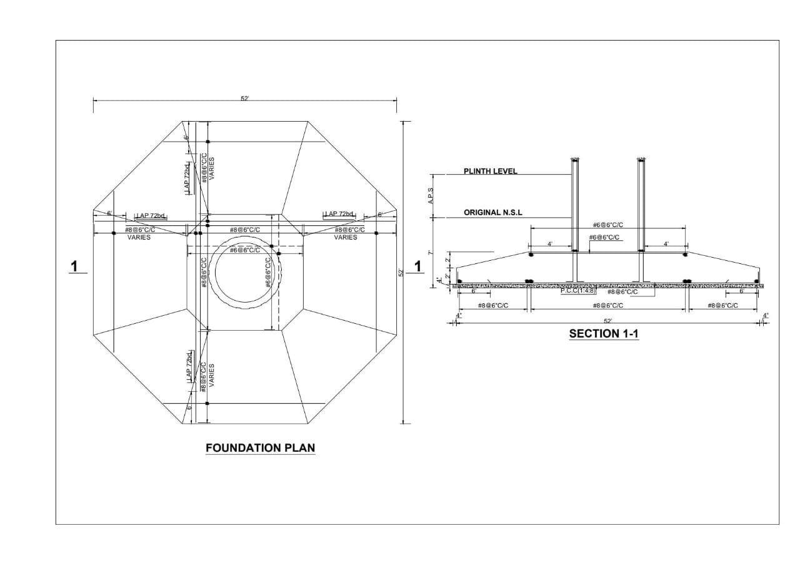

Water Tank Project: A Milestone in Sustainable Infrastructure
Just after graduation, I had the privilege of joining Al Mustakim Enterprises as a Site Engineer, working alongside a skilled and dedicated team on a significant Water Tank project. This project was not just a job—it was a transformative experience that shaped my career in civil engineering. My responsibilities included site supervision, preparation of Bar Bending Schedules (BBS) and Bills of Quantities (BOQ), and ensuring that all construction activities adhered to the approved drawings. I collaborated closely with clients, consultants, and contractors while overseeing material selection, structural analysis, and project planning. This multifaceted role deepened my expertise in construction management and sharpened my skills in on-site coordination.
As part of my duties, I was tasked with updating, monitoring, and controlling the project timeline. I provided monthly and weekly progress reports to the Project Engineer, ensuring transparency and accountability at every stage. Safety was a top priority, and I enforced strict adherence to safety protocols, which resulted in zero accidents and boosted overall project efficiency. This focus on safety also earned commendations from both the client and the project management team.
Throughout the project, I leveraged advanced construction management software such as Primavera P6 and AutoCAD to track progress, optimize resource allocation, and streamline workflows. This experience not only refined my technical skills but also taught me how to perform under pressure and meet stringent deadlines. One memorable instance was when we had to expedite a critical phase of the construction to align with the client’s revised schedule—a challenge we met successfully through meticulous planning and teamwork.
A major technical challenge was ensuring the structural integrity of the water tank under diverse load conditions, including seismic activity and water pressure. This required rigorous structural analysis using tools like STAAD.Pro, as well as the selection of high-quality reinforced concrete and waterproofing materials to guarantee durability and safety. We also had to coordinate with local municipalities and regulatory bodies to ensure compliance with building codes and environmental standards, adding a layer of complexity to the project.
Sustainability was at the heart of this initiative. We implemented eco-friendly construction practices, such as recycling excess concrete and using locally sourced materials to reduce the carbon footprint. To enhance the tank’s longevity, we installed IoT-based monitoring systems that track water levels, detect leaks, and provide real-time data for maintenance. These innovations not only lowered operational costs but also set a benchmark for future projects in the region.
The Water Tank project spanned 18 months and served a community of over 10,000 residents, providing a reliable water supply for domestic and agricultural use. One of the highlights was the community engagement phase, where we conducted workshops to educate locals about water conservation and the importance of maintaining the infrastructure. This initiative fostered goodwill and underscored the project’s broader social impact.
Looking back, this project was a cornerstone in my professional journey. It taught me the value of precision, collaboration, and innovation in civil engineering. Working with a talented team, I contributed to a structure that continues to benefit the local community, reinforcing my commitment to building sustainable infrastructure that stands the test of time.
Key Points
- Project Duration: 18 months
- Community Impact: Served over 10,000 residents
- Tools Used: Primavera P6, AutoCAD, STAAD.Pro
- Safety Record: Zero accidents
- Sustainability: Eco-friendly practices and IoT monitoring
Project Highlights
- Received client commendation for safety and efficiency
- Expedited critical phase under tight deadlines
- Implemented IoT-based monitoring for long-term performance
- Conducted community workshops on water conservation
- Set a regional benchmark for sustainable construction
Customer Views & Comments
"The water tank has been a game-changer for our village. We now have a reliable water supply, and the team’s efforts in educating us about maintenance were commendable." – Ali Hassan, Local Resident
"Al-Hamad Heaven Builders delivered beyond expectations. The project was completed on time, and the quality is outstanding. Their focus on safety and sustainability is truly impressive." – Sana Malik, Client Representative
"As a consultant, I appreciated the team’s professionalism and attention to detail. The use of advanced tools and eco-friendly practices made this project a standout." – Engr. Bilal Ahmed, Project Consultant